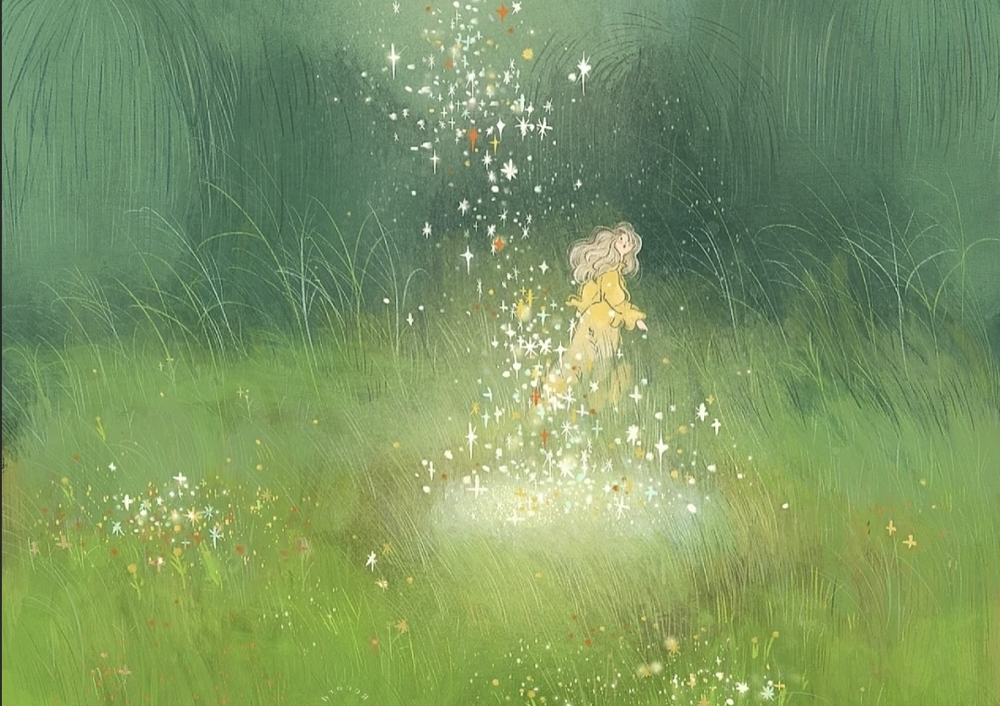
Yesanzhixu's vled
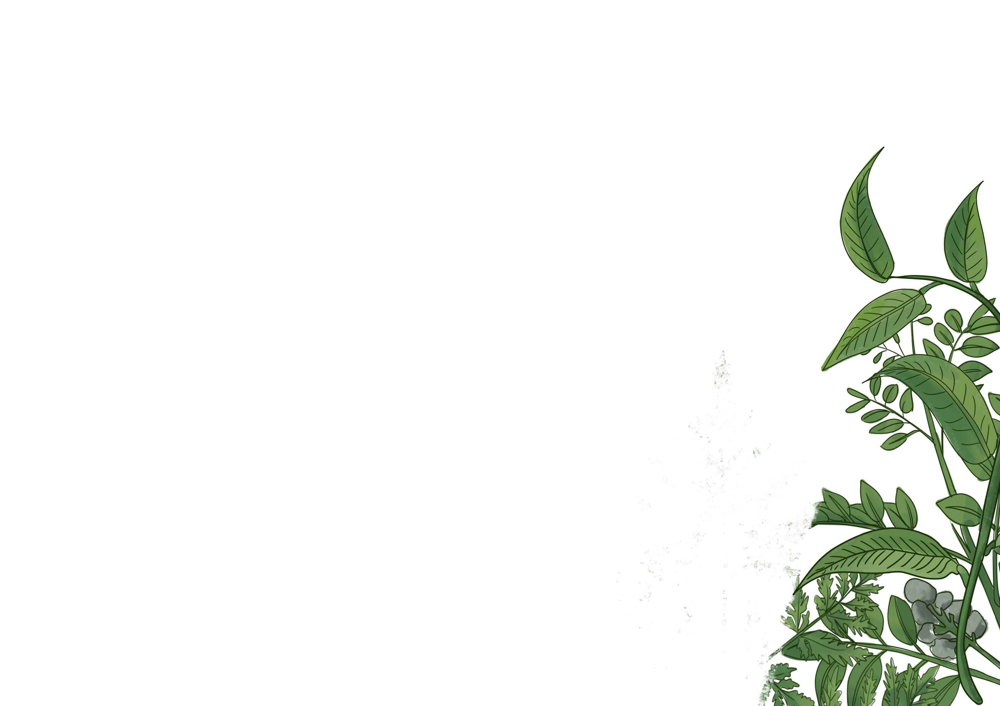
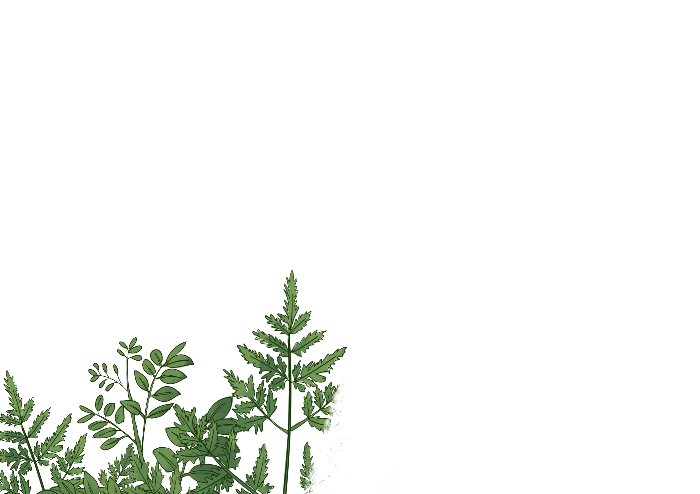
 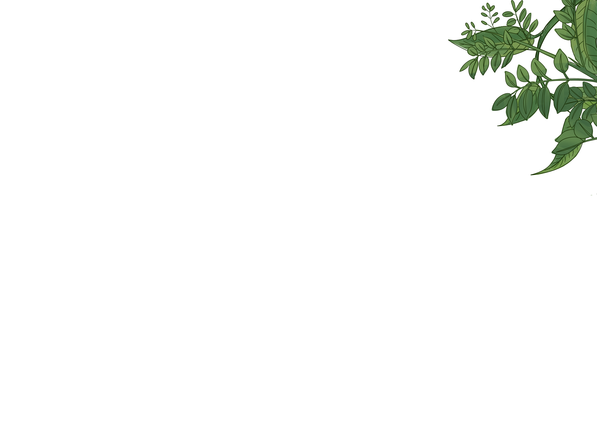
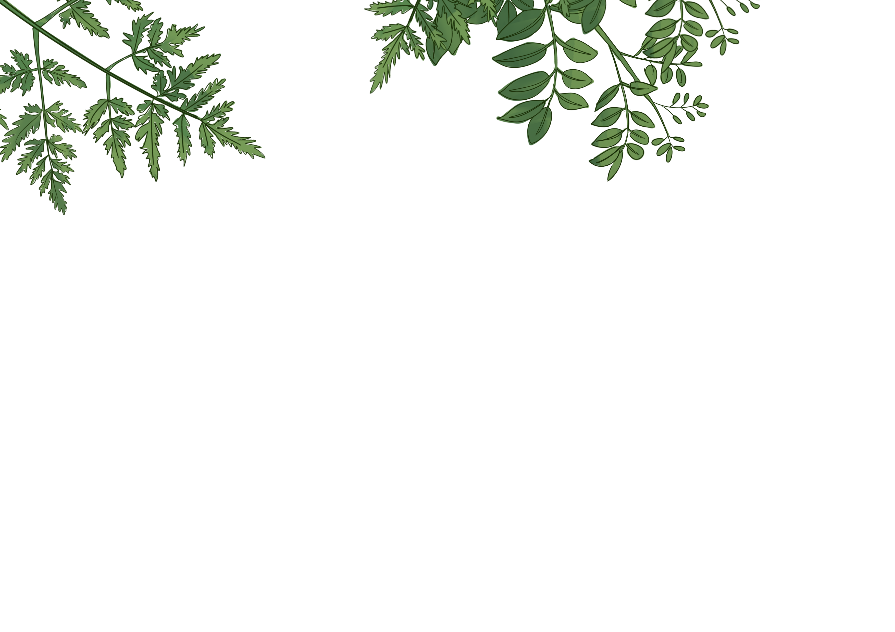
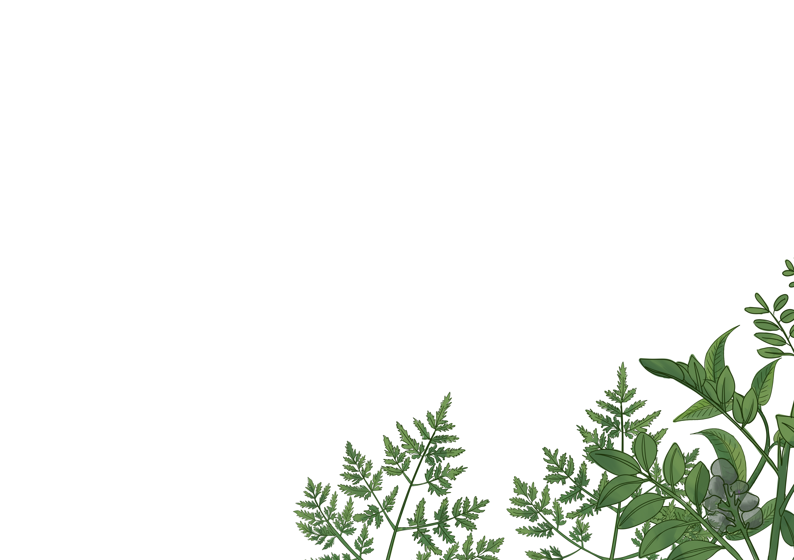
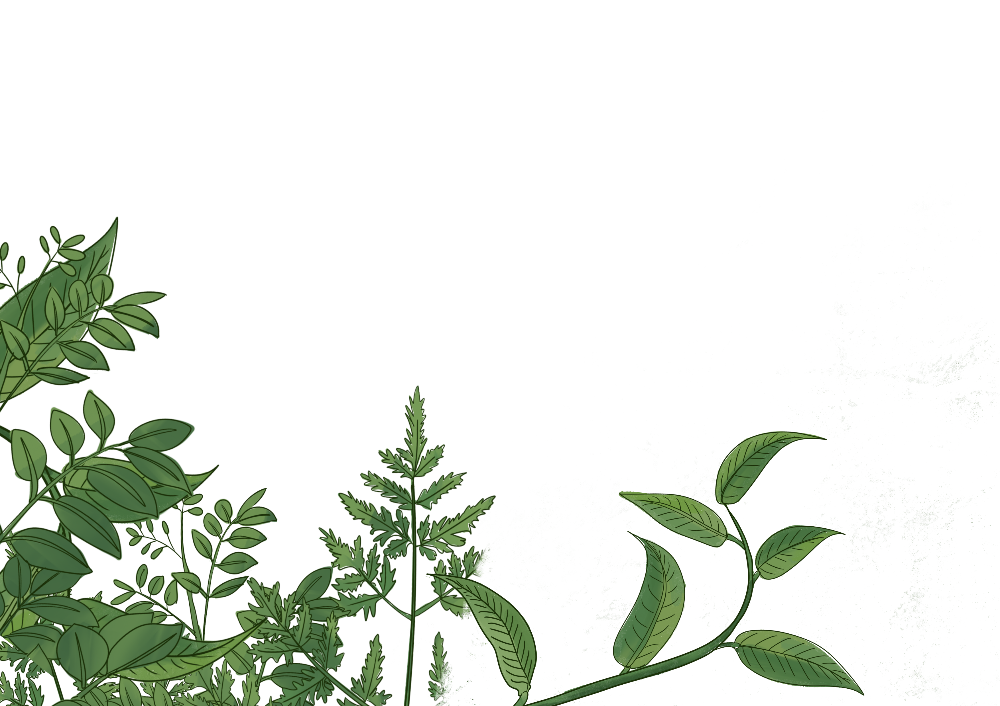
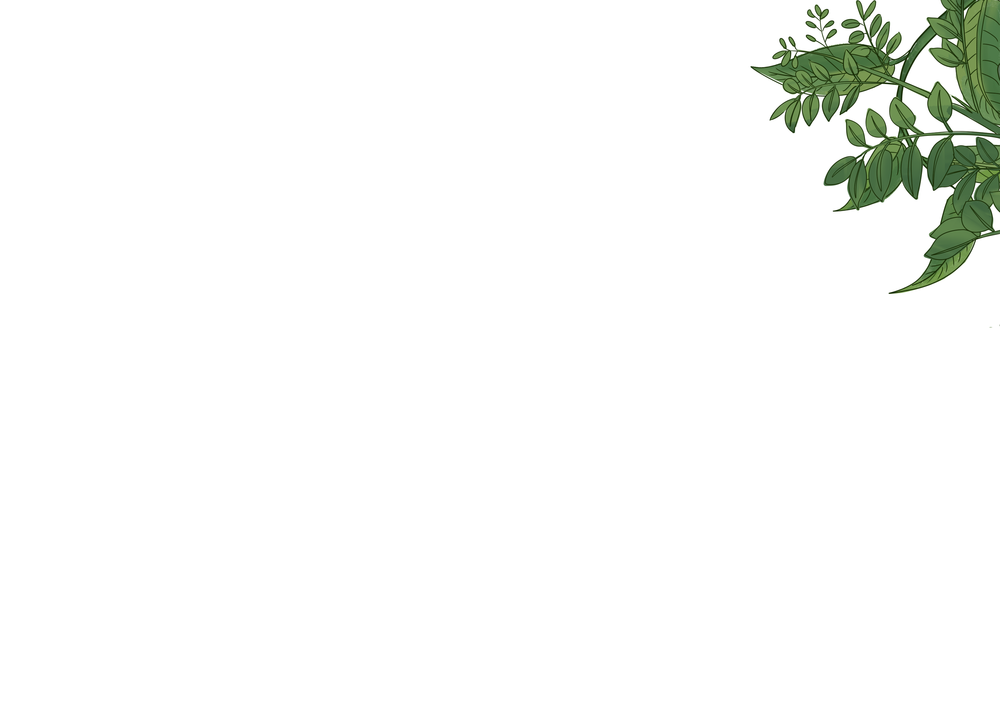
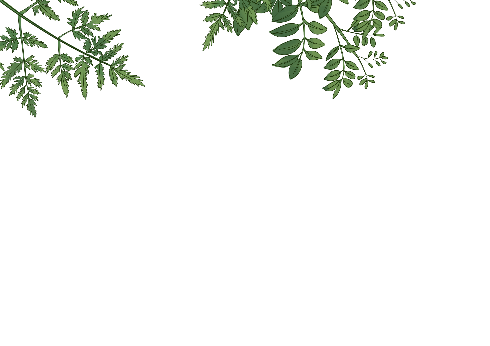
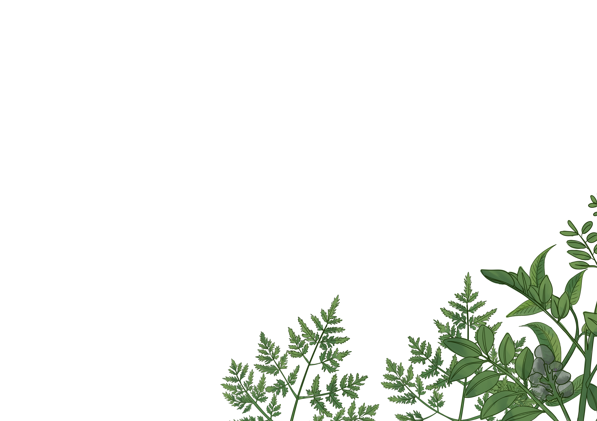
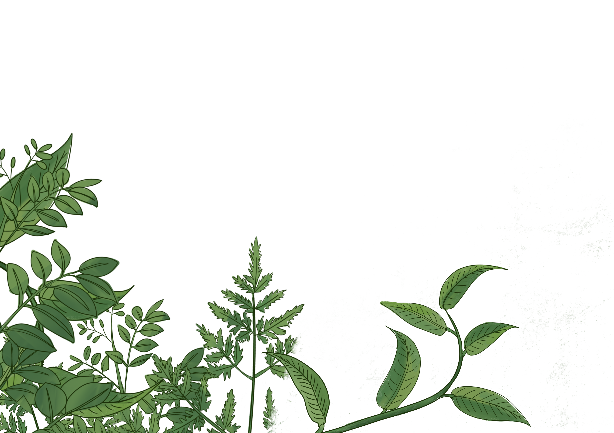
本人有话说
欢迎来到我的“领地”！
...
本人王思萱，
系中国传媒大学广告学院2021级视觉传达设计（广告设计方向)专业一名普普通通的“干饭人士”。
参与过许多活动，做班长，做社团部长，去创意创作中心，去白杨书院，去各种比赛，去支教，去尝试这各种跳出自己舒适圈的事……去尽力做到最好。
最近有成就感的是不多，一副风景油画被学校图书馆收藏，也曾协同中宣部参与央视网“兔年春节系列贺卡”互动H5的制作，参与了半夏的纪念主视觉和周边文创创作。
获得过全国公益广告大赛、全国大学生广告艺术大赛、学院奖和校级比赛最高二等奖、优秀奖等10余次奖项。
这些小小的成绩可能对别人来说不足为道，但是对我来说这些都是我成长与进步的见证～
...
目前是ENFP，我总是随性又执着的，喜新又念旧的矛盾体。
爱好我自己不太确定，但是很喜欢大自然，那是能治愈我整个人生各种苦痛的存在。
梦想是开一家梦想的民宿，在香格里拉，在泸沽湖畔，或者其他一个风景优美的地方。
分一间房做我的画室和工作室，画画，手工，写作，创作……
再分一间房收藏各种书籍，生活慢下来。
养一只柴犬叫黄花菜，养一只狸花猫叫小田心，实现猫狗双全。
有一个美丽的院子，种花种草，种蔬菜水果，过上自给自足的“小农经济”。
学会如何去享受生活与热爱生活，对我来说是头等大事。